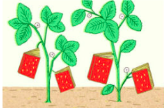
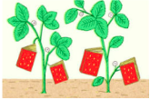

With the best of the season comming from "orchards, farms and gardens," NPR has put together an impressive collection of 10 summer cookbooks.
Wednesday, May 23,2012
Wednesday, May 23,2012
With the best of the season comming from "orchards, farms and gardens," NPR has put together an impressive collection of 10 summer cookbooks.
Summer isf after all, so often a time of accidental vegetarianism. It’s when even carnivorous folk (myself among them) are seduced by fields and farm stands, lured in by lettuce and tempted by tomatoes. We don’t necessarily set out to go meatless. But a couple of fruit smoothies and several bowls of baby greens later in the lazy heat of a stove-avoiding afternoon, that's just what happens. And so, to help you make the most of summer's bounty, here are 10 cookbooks that take their inspiration from that most peaceful of kingdoms — the plant kingdom.
See the full collection here.
Image via NPR.